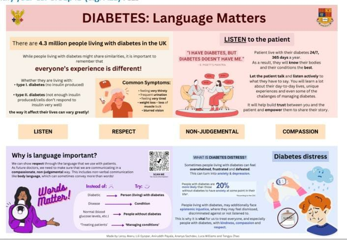

T2D projects
- GWAS. See Zuzuki K, et al. (2024)..
- GxE. See https://github.com/jinghuazhao/Mixed-Models.

References
Lopez-Cruz M, Crossa J, Bonnett D, Dreisigacker S, Poland J, Jannink JL, Singh RP, Autrique E, de los Campos G. Increased prediction accuracy in wheat breeding trials using a marker × environment interaction genomic selection model. G3 (Bethesda). 5(4):569-82 (2015), https://doi.org/10.1534/g3.114.016097 (BGLR-R).
Suzuki K, Hatzikotoulas K, Southam L, Taylor HJ, Yin X, Lorenz KM, Mandla R, Huerta-Chagoya A, Melloni GEM, Kanoni S, Rayner NW, Bocher O, Arruda AL, Sonehara K, Namba S, Lee SSK, Preuss MH, Petty LE, Schroeder P, Vanderwerff B, Kals M, Bragg F, Lin K, Guo X, Zhang W, Yao J, Kim YJ, Graff M, Takeuchi F, Nano J, Lamri A, Nakatochi M, Moon S, Scott RA, Cook JP, Lee JJ, Pan I, Taliun D, Parra EJ, Chai JF, Bielak LF, Tabara Y, Hai Y, Thorleifsson G, Grarup N, Sofer T, Wuttke M, Sarnowski C, Gieger C, Nousome D, Trompet S, Kwak SH, Long J, Sun M, Tong L, Chen WM, Nongmaithem SS, Noordam R, Lim VJY, Tam CHT, Joo YY, Chen CH, Raffield LM, Prins BP, Nicolas A, Yanek LR, Chen G, Brody JA, Kabagambe E, An P, Xiang AH, Choi HS, Cade BE, Tan J, Broadaway KA, Williamson A, Kamali Z, Cui J, Thangam M, Adair LS, Adeyemo A, Aguilar-Salinas CA, Ahluwalia TS, Anand SS, Bertoni A, Bork-Jensen J, Brandslund I, Buchanan TA, Burant CF, Butterworth AS, Canouil M, Chan JCN, Chang LC, Chee ML, Chen J, Chen SH, Chen YT, Chen Z, Chuang LM, Cushman M, Danesh J, Das SK, de Silva HJ, Dedoussis G, Dimitrov L, Doumatey AP, Du S, Duan Q, Eckardt KU, Emery LS, Evans DS, Evans MK, Fischer K, Floyd JS, Ford I, Franco OH, Frayling TM, Freedman BI, Genter P, Gerstein HC, Giedraitis V, González-Villalpando C, González-Villalpando ME, Gordon-Larsen P, Gross M, Guare LA, Hackinger S, Hakaste L, Han S, Hattersley AT, Herder C, Horikoshi M, Howard AG, Hsueh W, Huang M, Huang W, Hung YJ, Hwang MY, Hwu CM, Ichihara S, Ikram MA, Ingelsson M, Islam MT, Isono M, Jang HM, Jasmine F, Jiang G, Jonas JB, Jørgensen T, Kamanu FK, Kandeel FR, Kasturiratne A, Katsuya T, Kaur V, Kawaguchi T, Keaton JM, Kho AN, Khor CC, Kibriya MG, Kim DH, Kronenberg F, Kuusisto J, Läll K, Lange LA, Lee KM, Lee MS, Lee NR, Leong A, Li L, Li Y, Li-Gao R, Ligthart S, Lindgren CM, Linneberg A, Liu CT, Liu J, Locke AE, Louie T, Luan J, Luk AO, Luo X, Lv J, Lynch JA, Lyssenko V, Maeda S, Mamakou V, Mansuri SR, Matsuda K, Meitinger T, Melander O, Metspalu A, Mo H, Morris AD, Moura FA, Nadler JL, Nalls MA, Nayak U, Ntalla I, Okada Y, Orozco L, Patel SR, Patil S, Pei P, Pereira MA, Peters A, Pirie FJ, Polikowsky HG, Porneala B, Prasad G, Rasmussen-Torvik LJ, Reiner AP, Roden M, Rohde R, Roll K, Sabanayagam C, Sandow K, Sankareswaran A, Sattar N, Schönherr S, Shahriar M, Shen B, Shi J, Shin DM, Shojima N, Smith JA, So WY, Stančáková A, Steinthorsdottir V, Stilp AM, Strauch K, Taylor KD, Thorand B, Thorsteinsdottir U, Tomlinson B, Tran TC, Tsai FJ, Tuomilehto J, Tusie-Luna T, Udler MS, Valladares-Salgado A, van Dam RM, van Klinken JB, Varma R, Wacher-Rodarte N, Wheeler E, Wickremasinghe AR, van Dijk KW, Witte DR, Yajnik CS, Yamamoto K, Yamamoto K, Yoon K, Yu C, Yuan JM, Yusuf S, Zawistowski M, Zhang L, Zheng W; VA Million Veteran Program; Raffel LJ, Igase M, Ipp E, Redline S, Cho YS, Lind L, Province MA, Fornage M, Hanis CL, Ingelsson E, Zonderman AB, Psaty BM, Wang YX, Rotimi CN, Becker DM, Matsuda F, Liu Y, Yokota M, Kardia SLR, Peyser PA, Pankow JS, Engert JC, Bonnefond A, Froguel P, Wilson JG, Sheu WHH, Wu JY, Hayes MG, Ma RCW, Wong TY, Mook-Kanamori DO, Tuomi T, Chandak GR, Collins FS, Bharadwaj D, Paré G, Sale MM, Ahsan H, Motala AA, Shu XO, Park KS, Jukema JW, Cruz M, Chen YI, Rich SS, McKean-Cowdin R, Grallert H, Cheng CY, Ghanbari M, Tai ES, Dupuis J, Kato N, Laakso M, Köttgen A, Koh WP, Bowden DW, Palmer CNA, Kooner JS, Kooperberg C, Liu S, North KE, Saleheen D, Hansen T, Pedersen O, Wareham NJ, Lee J, Kim BJ, Millwood IY, Walters RG, Stefansson K, Ahlqvist E, Goodarzi MO, Mohlke KL, Langenberg C, Haiman CA, Loos RJF, Florez JC, Rader DJ, Ritchie MD, Zöllner S, Mägi R, Marston NA, Ruff CT, van Heel DA, Finer S, Denny JC, Yamauchi T, Kadowaki T, Chambers JC, Ng MCY, Sim X, Below JE, Tsao PS, Chang KM, McCarthy MI, Meigs JB, Mahajan A, Spracklen CN, Mercader JM, Boehnke M, Rotter JI, Vujkovic M, Voight BF, Morris AP, Zeggini E. Genetic drivers of heterogeneity in type 2 diabetes pathophysiology. Nature, 627:347–357 (2024), https://doi.org/10.1038/s41586-024-07019-6.